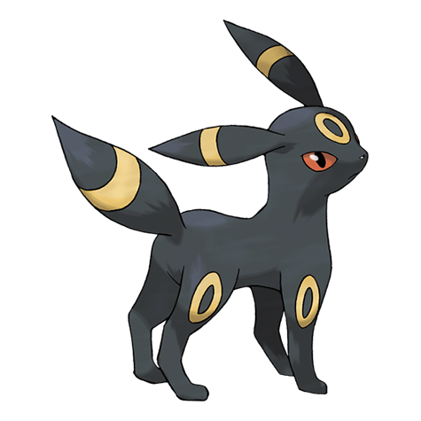

Conhecido na Pokédex Nacional como o número #0197, Umbreon (ou Blacky no Japão) é um dos Pokémon mais icônicos da segunda geração. Introduzido na região de Johto, ele foi um dos primeiros representantes do tipo Noturno (Dark) na franquia.

A biologia do Umbreon é fascinante e perfeitamente adaptada para a vida noturna. Diferente de outras evoluções do Eevee, seu corpo é totalmente coberto por uma pelagem negra e curta, com exceção de anéis amarelos peculiares espalhados por suas pernas, cauda, orelhas e testa. Quando Umbreon fica exposto à aura da lua, esses anéis brilham com uma intensidade misteriosa. Esse brilho não serve apenas para intimidação, mas também tem uma ligação direta com a misteriosa energia lunar que causou sua mutação.
Umbreon é um predador noturno de tocaia. Ele se esconde perfeitamente na escuridão da noite, aguardando o momento certo para atacar sua presa. Além disso, quando se sente ameaçado ou irritado, ele tem um mecanismo de defesa inusitado: pode secretar um suor venenoso por seus poros diretamente nos olhos do oponente, garantindo uma fuga rápida ou uma vantagem crucial na batalha.
Evoluir um Eevee para um Umbreon requer muita dedicação por parte do treinador. Diferente das pedras elementais (como a Pedra da Água para Vaporeon ou do Fogo para Flareon), Umbreon exige que o treinador forme um forte vínculo de amizade com o Eevee. Assim que essa amizade atingir o seu ápice, o Pokémon deve ganhar um nível de experiência durante a noite.
É um contraste direto com o Espeon, que exige as mesmas condições de amizade, porém evolui apenas durante o dia. Em gerações mais recentes, é fundamental garantir que o Eevee não conheça nenhum ataque do tipo Fada, pois isso faria com que ele evoluísse acidentalmente para um Sylveon, estragando os planos do treinador.
Nas batalhas Pokémon, Umbreon é historicamente reconhecido não por sua força de ataque, mas por ser um verdadeiro "tanque". Com estatísticas de Defesa e Defesa Especial absurdamente altas, é muito difícil derrubar um Umbreon com apenas um ou dois golpes.
Os jogadores costumam utilizá-lo como um Pokémon de suporte (conhecido na comunidade como Cleric). Ele frequentemente carrega movimentos como Wish (Desejo) para curar seus aliados, Heal Bell (Sino Curativo) para curar status negativos do time todo, e Foul Play (Jogo Sujo), um ataque poderoso que usa a própria força do oponente contra ele. Isso faz do Umbreon uma presença frustrante e quase indestrutível nas mãos de treinadores habilidosos.
No anime, Umbreon teve várias aparições marcantes. A mais nostálgica para muitos fãs aconteceu quando o rival de Ash, Gary Carvalho, revelou que seu fiel Eevee havia evoluído para um majestoso Umbreon. A evolução evidenciou que, apesar da personalidade arrogante de Gary no início da série, ele cuidava muito bem de seus Pokémon e tinha um laço de profunda amizade com eles.
© 2023 - Pokédex Wiki